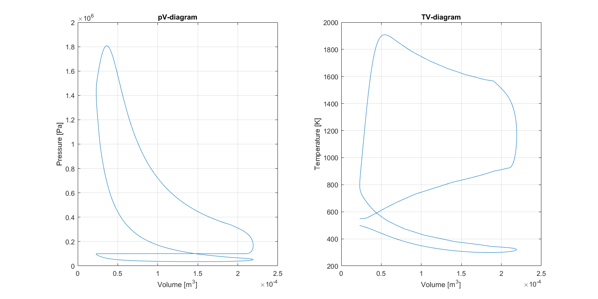
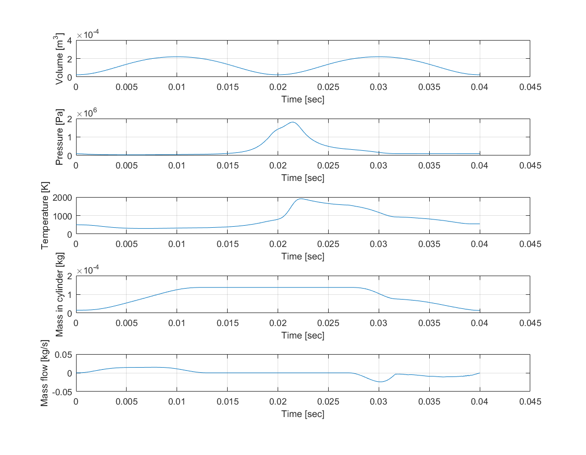

Contents
Initialisation
clear all; close all; clc % Clear the workspace; close all other windows; clear the command window % Load parameters addpath('Functions') % Add folders to path addpath('Parameters') addpath('NASA_database') addpath('NASA_database/General') addpath('NASA_database/General/Nasa') load('NasaThermalDatabase') addpath('Stages') run('Parameters.m') % Run m-file with parameters
Run
h = waitbar(0,'Please wait...'); steps = 4*pi*Numberofcycles/dCa; for N = 0:Numberofcycles-1 % Loop that runs once for every complete cycle run('IntakeValveOpen.m') % Run the script that describes the intake stage run('AllValvesClosed.m') % Run the script for the angles all valves are closed run('ExhaustValveOpen.m') % Run the script for the angles the exhaust valve is opened end % End of the loop close(h)
Results
Create a new figure for the plot
FigHandle = figure('Position', [60, 60, 1200, 600]); subplot(1,2,1) plot(V,P) % Plot pressure against volume grid on % Add grid to plot xlabel('Volume [m^3]') % Add label to the x-axis ylabel('Pressure [Pa]') % Add label to the y-axis title('pV-diagram') % Add title to the plot subplot(1,2,2) % Create a new figure for the plot plot(V,Tcyl) % Plot temperature against volume grid on % Add grid to plot xlabel('Volume [m^3]') % Add label to the x-axis ylabel('Temperature [K]') % Add label to the y-axis title('TV-diagram') % Add title to the plot
Other plots
FigHandle = figure('Position', [60, 60, 900, 700]); subplot(5,1,1) plot(t,V) ylabel('Volume [m^3]') xlabel('Time [sec]') grid on subplot(5,1,2) plot(t,P) ylabel('Pressure [Pa]') xlabel('Time [sec]') grid on subplot(5,1,3) plot(t,Tcyl) ylabel('Temperature [K]') xlabel('Time [sec]') grid on subplot(5,1,4) plot(t,MCyl) ylabel('Mass in cylinder [kg]') xlabel('Time [sec]') grid on subplot(5,1,5) plot(t,Mdot) ylabel('Mass flow [kg/s]') xlabel('Time [sec]') grid on
Calculation results
WorkPerCycle = trapz(V,P) / (N+1); % Calculate work done per cycle by integration of PV-diagram PowerOutput = WorkPerCycle * (RPM /(2*60)); % Calculate power output: Work per cycle * cycles per second bsfc = (YcylPreComb(1)+YcylPreComb(2))*max(MCyl)*3.6e9 / WorkPerCycle; % Brake specific fuel consumption [g/kWh] Efficiency = WorkPerCycle / ((YcylPreComb(1)+YcylPreComb(2))*max(MCyl)*Qlhv); % Efficiency engine; W/Qin TotalCost= bsfc*PriceGas*FracGas + bsfc*FracEth*PriceEth; %Total cost of used fuel. fprintf('Results:\n Work per cycle =\t%f\t\t[J]\n Power output =\t\t%f\t\t[W]\n bsfc =\t\t\t\t%d\t[g/kWh]\n Efficiency =\t\t%f\t\t[-]\n TotalCost =\t\t%f\t\t[-]\n\n',WorkPerCycle, PowerOutput, bsfc, Efficiency, TotalCost);
Results: Work per cycle = 93.952872 [J] Power output = 2348.821796 [W] bsfc = 2.967627e+02 [g/kWh] Efficiency = 0.286662 [-] TotalCost = 486.690872 [-]